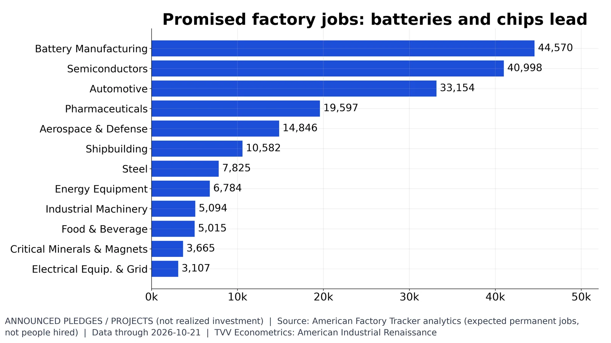
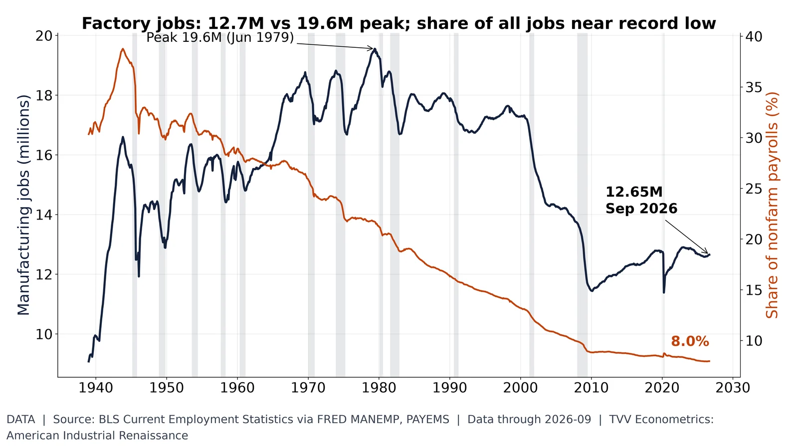
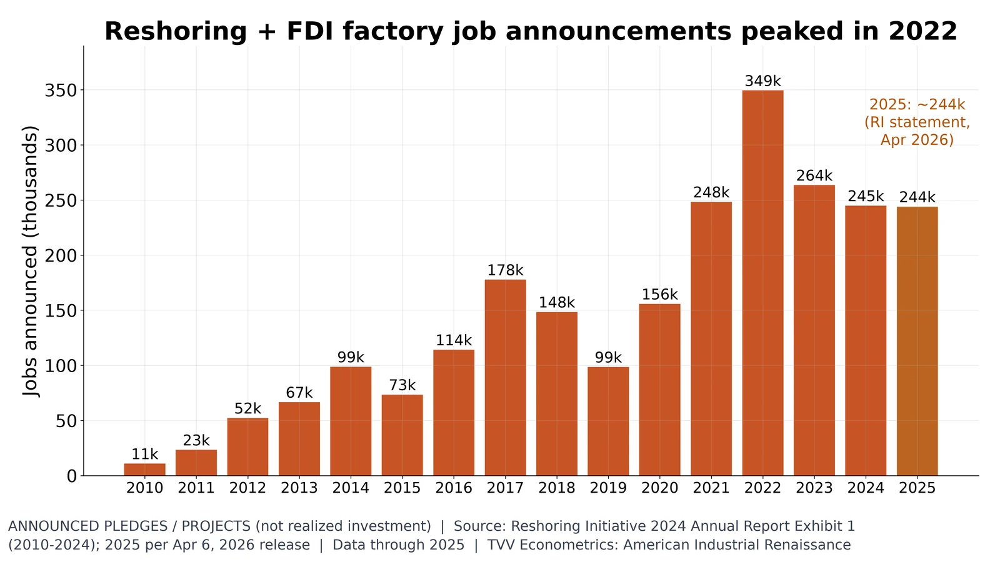

5. Jobs and Reshoring

208,058 announced permanent jobs; batteries 44,570, chips 40,998, autos 33,154. Expected, not hired. AFT, Oct 2026.
Announced | Data date: 2026-10-21
- Oct 21, 2026: 208,058 permanent jobs announced, not hired (Announced) https://americanfactorytracker.com/analytics
- Batteries 44,570; semiconductors 40,998; autos 33,154 (Announced) https://americanfactorytracker.com/analytics
- Pharma 19,597; aerospace and defense 14,846 (Announced) https://americanfactorytracker.com/analytics

12.65M factory jobs (Sep 2026), 8.0% of payrolls vs 39% peak. BLS via FRED.
Data | Data date: 2026-09
- Jan 2000: 17.28M factory jobs (Data) https://fred.stlouisfed.org/series/MANEMP
- Jan 2010: 11.45M low (Data) https://fred.stlouisfed.org/series/MANEMP
- Sep 2026: 12.65M, 8.0% of payrolls (Data) https://fred.stlouisfed.org/series/MANEMP https://fred.stlouisfed.org/series/PAYEMS
Sources: https://fred.stlouisfed.org/series/MANEMP https://fred.stlouisfed.org/series/PAYEMS

Announced reshoring+FDI jobs: 11k (2010) to 349k peak (2022); ~244k in 2024 and 2025. Announcements. Reshoring Initiative.
Announced | Data date: 2025
- 2010: 11k announced reshoring+FDI jobs (Announced) https://reshorenow.org/content/pdf/2024-1Q2025_RI_DATA_Report.pdf
- 2022: peak 349k (Announced) https://reshorenow.org/content/pdf/2024-1Q2025_RI_DATA_Report.pdf
- 2024 and 2025: about 244k a year (Announced) https://reshorenow.org/april-6-2026/
Sources: https://reshorenow.org/content/pdf/2024-1Q2025_RI_DATA_Report.pdf https://reshorenow.org/april-6-2026/